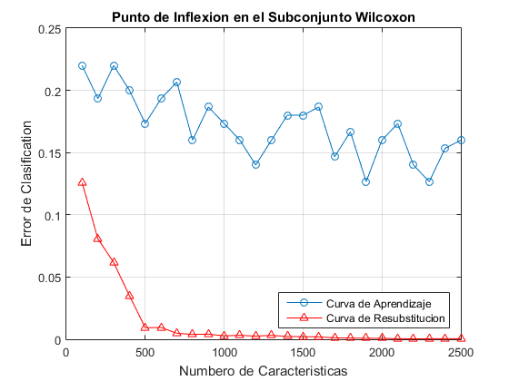

<!DOCTYPE html>
<html lang="es">
<head>
<meta http-equiv="Content-Type" content="text/html;charset=windows-1252">
<title>Contactos</title> 
<style>   
body{background:#151017; 
font-size:20px; 
color:white; 
padding:20px; } 
h1{color:RoyalBlue;}
</style>  
</head> 
<p><right>
    <section class="page-header">
    
      <a href="https://github.com/algorithmroi/MS-ALGORITHM-ROI/zipball/master" class="btn">Download .zip</a>
      <a href="https://github.com/algorithmroi/MS-ALGORITHM-ROI/tarball/master" class="btn">Download .tar.gz</a>
         </right>
</p>
<p>
<br>
<right>
<body> 
<right>
<a href="http://algorithmroi.github.io/MS-ALGORITHM-ROI/" title="RETURN TO THE PREVIOUS PAGE">RETURN</a>
</right>

<center>
<h1>Validation</h1> 
<p>  
Validation of the patterns detected in the previous section
are made using the classifier, Adaboost, where the error
classification using cross-validation and external further testing
samples will be measured. This stage is basically the modeling
Fig. 3. Algorithmic description of feature selection
of classifiers using the Dred, measure their performance,
eliminate predictors deficient, then re-evaluate the performance
of classifiers. 

The modeling of the classifiers and the elimination
of predictors deficient improve the performance of the
classification modeleders. The final performance is compared
among the three classifiers to measure the effectiveness of
pairs {(m/z)k, ik} selected in the previous section.
Adaboost is defined basically as a methodology learning
whereby you take an algorithm to classify simple cation and
iteratively applies a certain number of times in sequence,
where each iteration error classification is improved, achieving
superior returns the application of complex algorithms for
classification. 

The algorithm used in this step is the variant
used Adaboost.M1 data sets in two groups. In this paper,
this algorithm is applied according to the m available, for
which, first disconnect the entire set Dred in 3 subsets
randomly, training (mT ) cross-validation tests (mV C ) and
external tests (mV E). Once this separation, assuming the
(mT ) measurements has {I1, I2, ..., ImT} strength vectors
associated with a predictor p, said intensities are labeled with
a vector y = {+1, −1}, where +1 tag group G1 measurements
and measurements -1 group G2. El clasifier h(mT ) tag group
G1 measurements and measurements -1 group G2. h(mT )
will be defined  

The function Γ(yi 6= h(mT )) is 1 if success in the classification and it was
0 on error. This process is repeated β times, where the final classifier
H will be the combination of all classifiers h((mT )β) as
a function of a vector of weighting Bβ. The classifier final
would be defined by H(h(mT )) = (Pβi=1 Bih(mT )i), in this
case the function sign defines whether the element classi fi ed
belongs to G1 or G2 by mapping y = {+1, −1}.

In the evaluation of algorith of this part use two forms, coss
validation and external test this strengthens the results.
A common tendency to decrease the error classification in
the three classifiers, indicates that the chosen data have a high
degree of intergroup discrimination, otherwise any of these
tests will show sufficient overfiftting and underfiftting in behavior
the classifiers.

Also showing the effects of underfiftting
and overfiftting, the combination of these two benchmarks
limiting find false positives or false negatives in samples
analyzed, resulting tragic factor in this type of application.
In Figure 5, the application of these algorithms is presented
in the methodology developed in this paper.

</p>
</center>
<h3> Conjuno Arcene </h3>

<p>
<center>

<p></p>

<p></p>

<p></p>

<p></p>

<p></p>

<p></p>

<p></p>

<p></p>
<br>
</center>
</p>
<p></p>
<p>  </p>
<p> </p>

<br></br>
<br></br>
<br></br>
<right>
<a href="http://algorithmroi.github.io/MS-ALGORITHM-ROI/" title="RETURN TO THE PREVIOUS PAGE">RETURN</a>
</right>


<p>  </p>
<a href="index.html</a> 


</body>  
</html>
